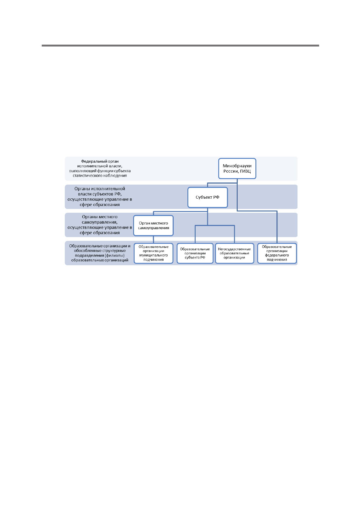

Личный кабинет как элемент информационной системы статистики образования
– личный кабинет уровня организации, реализующей образовательные программы
(общего образования, среднего профессионального и высшего образования);
– личный кабинет уровня административно-территориального образования;
– личный кабинет уровня субъекта Российской Федерации;
– личный кабинет федерального уровня.
В соответствии с выбранным подходом на текущий момент в информационной си-
стеме статистики образования созданы личные кабинеты для каждого субъекта РФ, око-
ло 2500 личных кабинетов административно-территориальных образований (АТО) и бо-
лее 52000 личных кабинетов для объектов наблюдения – организаций, осуществляющих
образовательную деятельность (рисунок).
Иерархия в информационной системе статистики образования.
Таким образом, в совокупности информационная система статистики образования
включает порядка 55000 личных кабинетов для организаций различных уровней, имею-
щих свое определенное место и роль в системе образования, от которых зависят их права
и возможности как пользователей личным кабинетом.
Роли и возможности пользователей личных кабинетов различных уровней опреде-
ляются иерархической структурой системы, в рамках которой обеспечивается персони-
фицированный доступ к информации, программному обеспечению и сервисам. Следо-
вательно, наибольшими возможностями для работы в системе обладают пользователи
личных кабинетов федерального уровня, а наименьшими – пользователи личных кабине-
тов образовательных организаций.
Как элемент информационной системы и инструментальное средство, личные каби-
неты выполняют следующие общие функции:
– обеспечение взаимодействия между участниками сбора сведений по формам ФСН;
– обеспечение возможности оперативного предоставления статистических данных
в соответствии с Федеральным планом статистических работ;
– контроль полноты и достоверности предоставляемых статистических сведений;
– обеспечение возможности получения сводной информации по выбранным пока-
зателям.
Вместе с тем, в зависимости от уровня объекта наблюдения перечень частных функ-
ций личных кабинетов различен (табл. 1).
8
Российский технологический журнал 2017 Том 5 № 5